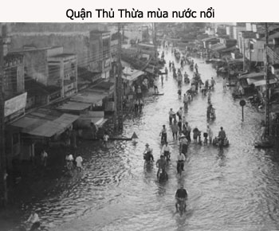

Thấy các nghệ sĩ trẻ ngày nay được hưởng cuộc sống đầy đủ tiện nghi, tôi nhớ lại nửa thế kỷ trước đây, nghệ sĩ cải lương chúng tôi đã sống một cuộc đời du mục, rày đây mai đó, vui buồn theo con sông, bến nước, cuối chợ đầu làng. Ấm no hay đói rách nhờ vào khán giả và các Mạnh Thường Quân ở khắp mọi nơi.

Còn nhớ mùa nước lụt năm 1950…
Đoàn Tiếng Chuông Bầu Cang hát ở chợ Thủ Thừa, tỉnh Tân An, lúc đó khoảng cuối tháng 10 dương lịch, mùa nước nổi năm đó lớn quá, nước ngập vô tới chợ, ngập luôn trong rạp hát và hầm sân khấu. Trời lại mưa dầm luôn mấy ngày đêm, đoàn hát không hát được.
Ông Bầu Cang chạy lo tiền cơm cho toàn đoàn ăn, ba ngày đã hụt hơi, ông nói phải về Sàigòn vay nợ rồi sẽ trở xuống mướn xe hay ghe tàu, đưa đoàn trở về Sàigòn. Nhưng ông về Sàigòn không vay được nợ hay vay được mà ông đã nướng hết vô sòng bạc Kim Chung nên ổng trốn luôn, để mặc cho vợ ông, cô Năm Phát (chị ruột của nữ nghệ sĩ tài danh Sáu Ngọc Sương) một mình lèo lái đoàn trong cơn khốn khó. Cô Năm Phát cầm cố nữ trang, chạy ăn từng bữa cho toàn thể nhơn viên trong gánh hát.
Kép chánh Thanh Cao, đào chánh Ngọc An, kép độc Trường Xuân cũng phải cầm quần, bán áo để qua cơn túng ngặt.
Đoàn không thể dời đi bến nào khác được vì nước ngập cả lộ số 4 (đường Sàigòn – Mỹ Tho), nên không mướn được xe tải hay xe hàng. Qua đến ngày thứ 8, mưa dứt hột, nước rút nhiều, trong quận đường xá còn nhiều sình lầy nhưng có thể đi tới đi lui trong phố chợ.
Bà Năm Phát muốn mướn xe để dời đoàn ra tỉnh Long An, nhưng kép độc Trường Xuân đề nghị ở lại thêm mười ngày để hốt bạc rồi mới dời đi. Kép độc Trường Xuân nổi danh là Thầy Rùa (như Dư Hồng, thầy rùa trong tuồng Lưu Kim Đính sát tứ môn thành), có nhiều sáng kiến, nhiều mưu kế giúp đoàn thoát nguy nhiều lần, nên đề nghị lần nầy của Trường Xuân được mọi người lắng nghe mưu kế kiếm tiền của anh trong cơn thắt ngặt nầy.
Anh nói:
– Mấy bữa nay, tôi theo anh em dàn cảnh đi soi ếch, bắt cá để cải thiện bữa ăn, tôi gặp ông chủ tiệm thuốc Bắc ở đầu chợ, ổng nói mấy chú đi soi ếch, bắt cá khuya vậy, nguy hiểm lắm. Dù cho mấy chú lính trên đồn ở đầu cầu thông cảm cho mấy chú đi đêm, không bắt bớ, nhưng thằng Tây xếp bót ở đồn gần sân banh, đêm đêm nó thấy bóng đen là xả súng bắn liền. Mấy chú có thể làm công việc khác, kiếm tiền nhiều hơn để mua cá mắm, sao mấy chú không làm?
Trường Xuân nói:
– Tôi chỉ biết hát, mấy anh em nầy chỉ làm dàn cảnh, khuân vác đề co, đâu có nghề nghiệp gì khác.
Ông cười, nói:
– Mấy chú theo tôi, tới tiệm thuốc Bắc của tôi là biết liền hết.
Trường Xuân kể tiếp:
– Tới tiệm thuốc Bắc, ông biểu vợ ông nấu một nồi cơm lớn, canh chua cá sặc bướm với rau muống, thịt kho hột vịt, cá trê dầm nước mắm gừng cho chúng tôi ăn một bữa no nê. Tôi cẩn thận, vô công bất thọ lộc, hỏi ổng muốn chúng tôi làm gì mà đối xử trọng hậu như vậy? Ông biểu chúng tôi cứ ăn cơm no nê đi, ổng thấy gánh hát nghỉ hát nhiều ngày, anh em phải đi soi ếch, bắt cá, hái rau để có cái ăn, ổng thương nên muốn giúp một bữa ăn ngon thôi. Mấy anh em kia ăn thiệt tình, thật no, thật ngon, còn tôi thì băn khoăn hoài nên dứt bữa ăn, tôi nói:
– Thực nhơn tài phải cứu nhơn tai, chúng tôi thọ ơn ông rồi, vậy ông cần gì thì nói thiệt với chúng tôi.
Ông nói:
– Mấy chú dọn cảnh là bày ra, dẹp vô cảnh trí trên sân khấu. Sẵn nước lụt, tiệm của tôi đầy bùn đất, rác rến mà chúng tôi không có sức để dọn dẹp. Mấy chú giúp dùm như dọn đồ hát trên sân khấu, tôi mua bán được, trả tiền công cho mấy chú, vậy hỏng tốt sao?
Tôi còn do dự thì anh Sáu Dàn Cảnh nhận lời:
– Mình giúp cho khán giả ái mộ, cũng là chuyện tốt mà!.
Nói xong là mấy anh lấy vá, xuổng xúc bùn đất đổ ra ngoài sau hè, còn gánh nước rửa cửa tiệm sạch sẽ.
Người trong xóm thấy có người trong đoàn hát tới giúp cho tiệm thuốc Bắc, họ khen mấy chú gánh hát tử tế, rồi họ đề nghị là tới giúp họ. Ngoài việc cho ăn cơm nước tử tế, trả tiền công trọng hậu, lại còn cho thêm gạo thóc, cá mắm. Bao gạo mà mấy anh em dàn cảnh đem về cho “thẩm khậu” nấu cơm cho toàn đoàn ăn, đó là của tiệm chạp phô ngoài phố tặng cho đoàn hát khi anh em tôi tới giúp họ vét bùn, sửa sang cửa tiệm.
Ông chủ rạp hát nghe đồn anh em trong gánh hát giúp dân trong phố dọn dẹp nhà cửa sau cơn nước lụt bèn đến gặp chúng tôi, đề nghị anh em vét bùn, rửa sạch rạp hát của ông, ông cho hát một tuần lễ không lấy tiền mướn rạp, đồng thời ông bao trả tiền mướn máy đèn trong tuần lễ đó, ngoài ra còn cho căng một giây đèn nhiều bóng, chạy dài từ phố chợ vô rạp hát.
Nên biết là ở quận Thủ Thừa trong những năm 1940, 1950, 1960, đèn trong quận chỉ được thắp sáng từ 6 giờ tối đến 10 giờ. Sau đó nhà đèn chỉ còn cho mấy ngọn đèn đường leo lét, đèn nhà câu trực tiếp của nhà đèn đều bị cúp. Những tiệm nước, tiệm bán ăn khuya phải thắp đèn manchon hoặc đèn dầu lửa.
Ông chủ rạp hát chịu tốn kém như vậy để nhờ đoàn hát làm cho rạp hát của ông hoạt động trở lại. Vậy là tất cả anh em nghệ sĩ, công nhân sân khấu ra sức rửa cho sạch rạp hát, sàn diễn, hầm sân khấu và cả ghế khán giả.
Tuần lễ đó, hát đông nghẹt khán giả vì dân trong phố có cảm tình với gánh hát. Tiền mướn rạp khỏi trả, lại hát complet nên lương anh em được gấp đôi, bà Năm Phát và anh em cũng có tiền chuộc lại nữ trang và đồ đạc đã cầm cố trong những ngày lụt lội vừa qua.
Đêm hát đầu tiên, có cô thôn nữ tên Huệ (dường như là hoa khôi Thủ Thừa), lên sân khấu hò một câu tặng anh em trong gánh hát
Hò ơ… Qua sông Vàm Cỏ Tây, em nhớ Thủ Thừa trong mùa nước nổi… ờ…ơ...
Đường đi lầy lội,… nước cả mênh mông..
Nghiêng nghiêng cánh cò soi bóng trên đồng…ờ…
Thương anh kép hát….ơ…thương anh kép hát, gánh gồng giúp dân ơ….ơ…
Khán giả vỗ tay hoan hô quá mạng, cô Huệ cúi chào rồi định bước xuống phòng khán giả, Trường Xuân đã hóa trang mặt làm tướng Mông Cổ, chạy ra: “Khoan…khoan! Cho tôi hò một câu đáp lễ. ”
Khán giả thấy ông tướng Mông Cổ hò Đồng Tháp, khoái quá, la lên tán thưởng: “Phải đó…Hò đi… hò đi… ”
Trường Xuân vuốt râu, trợn mắt, ráng gân cổ, hò:
“Hò ơ… Gió lay lay, hương tràm bay bay thơm mặt nước … ờ…
Vàm Cỏ Tây xuôi ngược lắm xuồng ghe…ờ…
Xích lại gần đây anh nói em nghe… ơ…
Chừng bao lâu nữa…ơ…ơ…chừng bao lâu nữa, em về với anh …ơ…”
Tiếng anh khàn khàn, người mập, thấp lùn, lại hóa trang Mông Cổ mà hò Đồng Tháp, nghe cũng mùi mẫn, khiến cho khán giả vừa cười vừa vỗ tay hoan hô, có người la lớn: “Chịu hông… Chịu thì theo gánh hát luôn đi… ”
Cô Huệ mắc cỡ, che miệng cười, khoát khoát tay cho mọi người im tiếng, cô hò:
Hò ơ…Em sẽ thăm anh khi tràm xanh nước nổi ờ…
Còn chuyện duyên tình…ờ…ơ…xin chớ đợi chuyện trăm năm…ơ…
Bướm vàng hút nhụy hoa tràm…ơ…bướm vàng hút nhụy hoa tràm, lấy chồng xứ lạ, em không đành xa quê em…ơ...
Khán giả vỗ tay cổ võ, muốn cuộc hò đối đáp kéo dài, nhưng anh Tám Cao đã cho chuông reo báo giờ biểu diễn.
Trường Xuân lui vô, màn hát bắt đầu, tướng Mông Cổ Trường Xuân đêm nay hát thật là hay, ca thật là mùi. Anh hy vọng vản hát sẽ gặp lại người đẹp, nhưng đêm đó anh ngồi trước cửa rạp hát với ngọn đèn dầu lù mù, bên chai rượu đế, chờ hoài… chờ hoài… nhưng bặt tin nhàn cá. Người đẹp không muốn lấy chồng xứ lạ nên biến mất trong cái đêm tối mù mờ của một quận ly bé nhỏ xa xôi.
Mấy hôm sau gánh hát dọn đi, các nghệ sĩ đều vui vì thu nhập cao, vì được khán giả thương mến, chỉ có một người rất buồn, ngồi trên xe mà đôi mắt nhìn chằm chặp vào đám đông khán giả tiễn đưa. Trường Xuân mong thấy lại được nụ cười của cô gái hò đối đáp đêm trước, nhưng không thể nào thấy được.
Xe qua cầu sắt, rời quận Thủ Thừa một đoạn đường khá xa, sắp đến con lộ số 4, Trường Xuân còn ngẩn ngơ như đã để quên con tim ở lại.
Nửa thế kỷ đã qua, chút tình lãng mạn ngày xưa vẫn còn đọng lại trong lòng Trường Xuân!